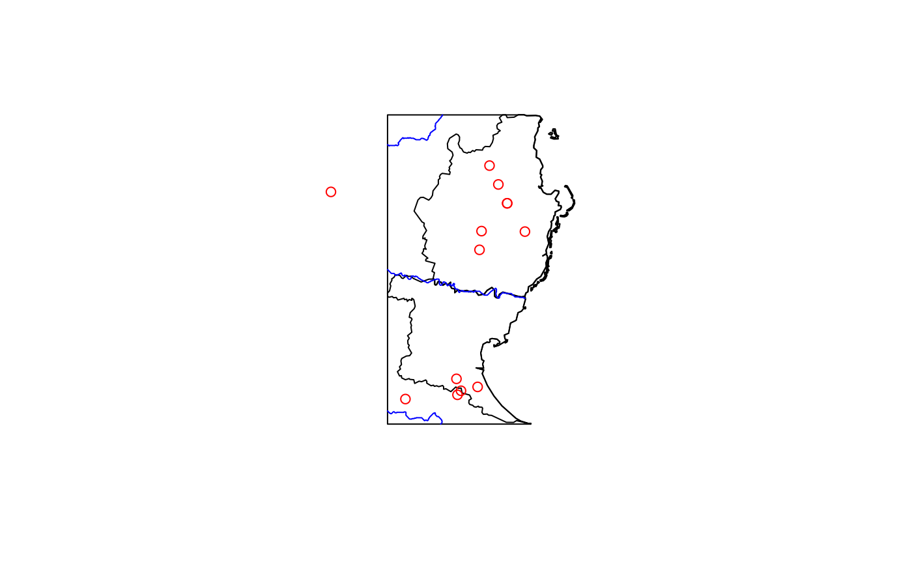
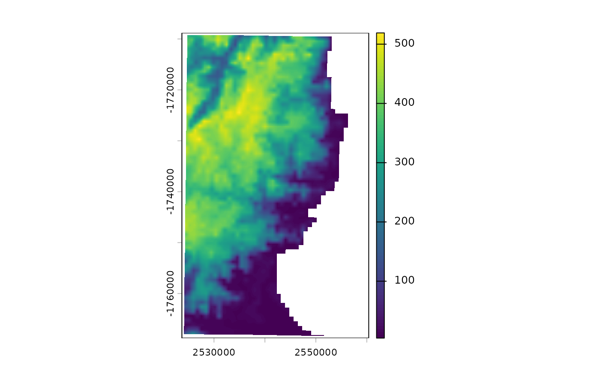
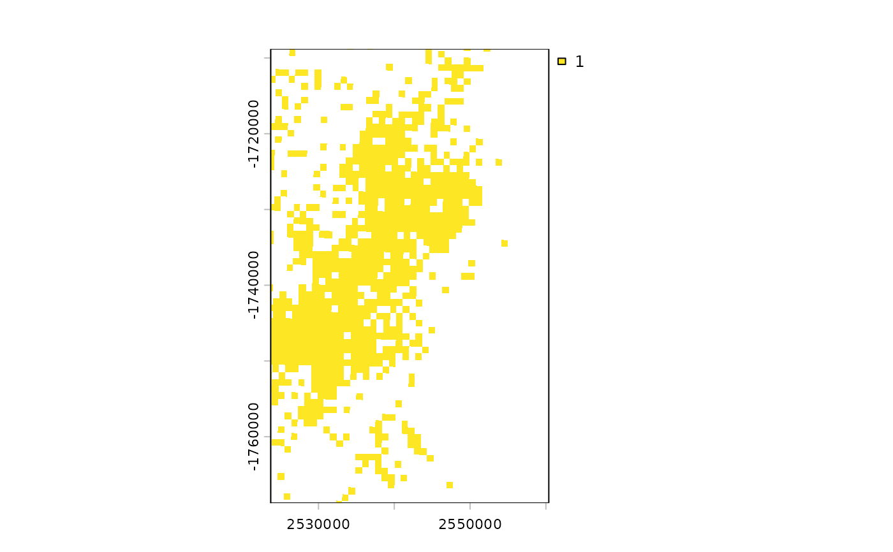
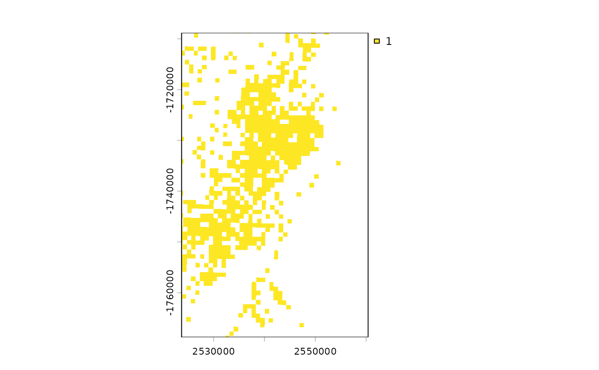
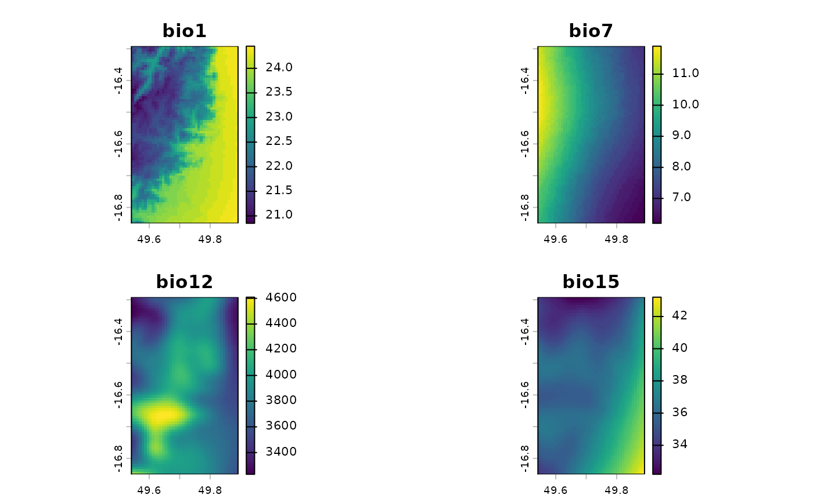
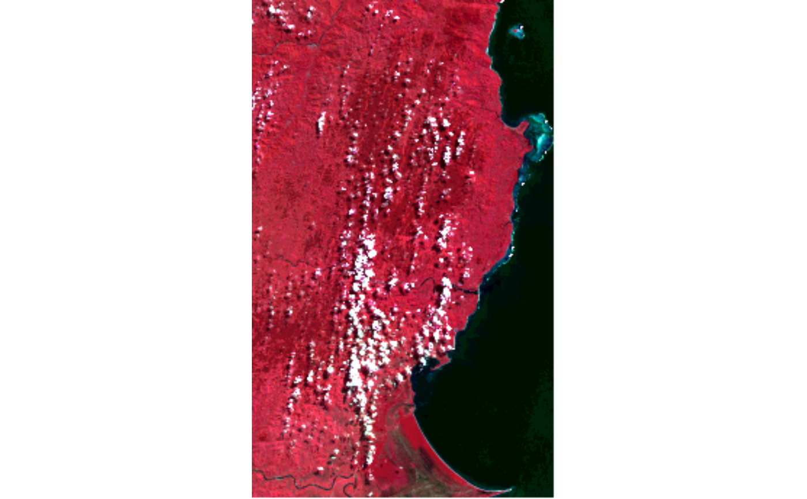
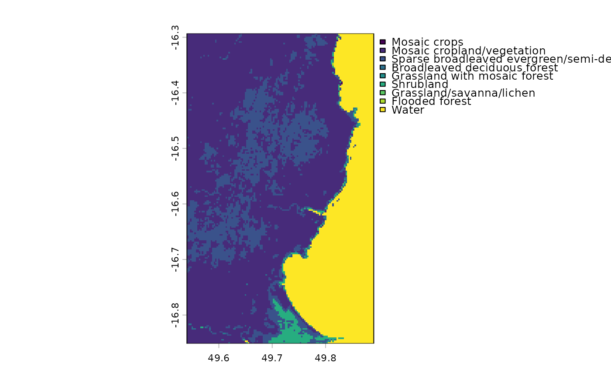

This function is a simple way to get example rasters or spatial vector datasets that come with fasterRaster.
Arguments
- x
The name of the raster or spatial vector to get. All of these represent a portion of the eastern coast of Madagascar.
Spatial vectors (objects of class
sffrom the sf package):madCoast0: Outline of the region (polygon)
madCoast4: Outlines of the Fokontanies (Communes) of the region (polygons)
madDypsis: Records of plants of the genus Dypsis (points)
madRivers: Major rivers (lines)
Rasters (objects of class
SpatRasterfrom the terra package, saved as GeoTIFF files):madChelsa: Bioclimatic variables
madCover: Land cover
madElev: Elevation
madForest2000: Forest cover in year 2000
madForest2014: Forest cover in year 2014
madLANDSAT: Surface reflectance in 2023
madPpt, madTmin, madTmax: Rasters of mean monthly precipitation, and minimum and maximum temperature.
Data frames
appFunsTable: Table of functions usable by
app()madCoverCats: Land cover values and categories for
madCovervegIndices: Vegetation indices that can be calculated with
vegIndex()
Examples
### vector data
library(sf)
#> Linking to GEOS 3.12.1, GDAL 3.8.4, PROJ 9.4.0; sf_use_s2() is TRUE
#>
#> Attaching package: ‘sf’
#> The following objects are masked from ‘package:fasterRaster’:
#>
#> st_as_sf, st_buffer, st_coordinates, st_crs
# For vector data, we can use data(*) or fastData(*):
data(madCoast0) # same as next line
madCoast0 <- fastData("madCoast0") # same as previous
madCoast0
#> Simple feature collection with 1 feature and 3 fields
#> Geometry type: MULTIPOLYGON
#> Dimension: XY
#> Bounding box: xmin: 2524653 ymin: -1767812 xmax: 2560090 ymax: -1709191
#> Projected CRS: Africa_Lambert_Conformal_Conic
#> COUNTRY NAME_1 NAME_2 geometry
#> 1 Madagascar Toamasina Analanjirofo MULTIPOLYGON (((2524653 -17...
plot(st_geometry(madCoast0))
madCoast4 <- fastData("madCoast4")
madCoast4
#> Simple feature collection with 2 features and 5 fields
#> Geometry type: MULTIPOLYGON
#> Dimension: XY
#> Bounding box: xmin: 2524653 ymin: -1767812 xmax: 2560140 ymax: -1709141
#> Projected CRS: Africa_Lambert_Conformal_Conic
#> COUNTRY NAME_1 NAME_2 NAME_3 NAME_4
#> 1 Madagascar Toamasina Analanjirofo Mananara Antanambe
#> 2 Madagascar Toamasina Analanjirofo Soanierana-Ivongo Manompana
#> geometry
#> 1 MULTIPOLYGON (((2558667 -17...
#> 2 MULTIPOLYGON (((2533558 -17...
plot(st_geometry(madCoast4), add = TRUE)
madRivers <- fastData("madRivers")
madRivers
#> Simple feature collection with 3 features and 3 fields
#> Geometry type: LINESTRING
#> Dimension: XY
#> Bounding box: xmin: 2524653 ymin: -1767812 xmax: 2550723 ymax: -1709191
#> Projected CRS: Africa_Lambert_Conformal_Conic
#> TopElev BotElev Slope geometry
#> 1 495 2 0.005781444 LINESTRING (2524653 -173852...
#> 2 652 4 0.005808253 LINESTRING (2524653 -171484...
#> 3 24 0 0.001063664 LINESTRING (2524653 -176531...
plot(st_geometry(madRivers), col = "blue", add = TRUE)
madDypsis <- fastData("madDypsis")
madDypsis
#> Simple feature collection with 13 features and 13 fields
#> Geometry type: POINT
#> Dimension: XY
#> Bounding box: xmin: 2513925 ymin: -1763063 xmax: 2550698 ymax: -1718803
#> Projected CRS: Africa_Lambert_Conformal_Conic
#> First 10 features:
#> gbifID species country stateProvince latitude longitude
#> 1 1258262878 Dypsis boiviniana Madagascar Toamasina -16.50000 49.80000
#> 2 1258261855 Dypsis forficifolia Madagascar Toamasina -16.50000 49.72000
#> 3 4031635203 Dypsis faneva Madagascar Toamasina -16.43333 49.44166
#> 4 4032077789 Dypsis fanjana Madagascar Toamasina -16.45000 49.76667
#> 5 1258261866 Dypsis paludosa Madagascar Toamasina -16.45000 49.76666
#> 6 4032047806 Dypsis ramentacea Madagascar Toamasina -16.41667 49.75000
#> 7 4032124261 Dypsis fasciculata Madagascar Toamasina -16.38333 49.73333
#> 8 4031363900 Dypsis paludosa Madagascar Toamasina -16.53333 49.71667
#> 9 4032132562 Dypsis pinnatifrons Madagascar Toamasina -16.77694 49.71611
#> 10 4032072554 Dypsis heterophylla Madagascar Toamasina -16.78416 49.68555
#> day month year institution license rightsHolder
#> 1 16 4 1992 Missouri Botanical Garden CC_BY_4_0 Missouri Botanical Garden
#> 2 NA NA NA Missouri Botanical Garden CC_BY_4_0 Missouri Botanical Garden
#> 3 NA 10 1991 Missouri Botanical Garden CC_BY_4_0 Missouri Botanical Garden
#> 4 5 10 1991 Missouri Botanical Garden CC_BY_4_0 Missouri Botanical Garden
#> 5 21 4 1992 Missouri Botanical Garden CC_BY_4_0 Missouri Botanical Garden
#> 6 7 10 1991 Missouri Botanical Garden CC_BY_4_0 Missouri Botanical Garden
#> 7 NA 4 1992 Missouri Botanical Garden CC_BY_4_0 Missouri Botanical Garden
#> 8 26 2 1987 Missouri Botanical Garden CC_BY_4_0 Missouri Botanical Garden
#> 9 29 6 2007 Missouri Botanical Garden CC_BY_4_0 Missouri Botanical Garden
#> 10 4 7 2007 Missouri Botanical Garden CC_BY_4_0 Missouri Botanical Garden
#> recordedBy geometry
#> 1 H.J. Beentje;al. POINT (2550698 -1731317)
#> 2 POINT (2542470 -1731222)
#> 3 H.J. Beentje POINT (2513925 -1723786)
#> 4 H.J. Beentje POINT (2547331 -1725948)
#> 5 H.J. Beentje;al. POINT (2547331 -1725948)
#> 6 H.J. Beentje POINT (2545658 -1722375)
#> 7 H.J. Beentje;John Dransfield POINT (2543985 -1718803)
#> 8 Marion F. Nicoll POINT (2542086 -1734771)
#> 9 Adolphe Lehavana;al. POINT (2541728 -1760759)
#> 10 Honoré Andriamiarinoro POINT (2538576 -1761493)
plot(st_geometry(madDypsis), col = "red", add = TRUE)

### raster data
library(terra)
#> terra 1.9.50
#>
#> Attaching package: ‘terra’
#> The following object is masked from ‘package:data.table’:
#>
#> shift
#> The following object is masked from ‘package:fasterRaster’:
#>
#> combineLevels
# For raster data, we can get the file directly or using fastData(*):
rastFile <- system.file("extdata/madElev.tif", package="fasterRaster")
madElev <- terra::rast(rastFile)
madElev <- fastData("madElev") # same as previous two lines
madElev
#> class : SpatRaster
#> size : 1090, 667, 1 (nrow, ncol, nlyr)
#> resolution : 54.99431, 54.99431 (x, y)
#> extent : 2523700, 2560381, -1768756, -1708812 (xmin, xmax, ymin, ymax)
#> coord. ref. : Africa_Lambert_Conformal_Conic
#> source : madElev.tif
#> name : madElev
#> min value : 4
#> max value : 520
plot(madElev)

madForest2000 <- fastData("madForest2000")
madForest2000
#> class : SpatRaster
#> size : 1090, 667, 1 (nrow, ncol, nlyr)
#> resolution : 54.99431, 54.99431 (x, y)
#> extent : 2523700, 2560381, -1768756, -1708812 (xmin, xmax, ymin, ymax)
#> coord. ref. : Africa_Lambert_Conformal_Conic
#> source : madForest2000.tif
#> name : madForest2000
#> min value : 1
#> max value : 1
plot(madForest2000)

madForest2014 <- fastData("madForest2014")
madForest2014
#> class : SpatRaster
#> size : 1090, 667, 1 (nrow, ncol, nlyr)
#> resolution : 54.99431, 54.99431 (x, y)
#> extent : 2523700, 2560381, -1768756, -1708812 (xmin, xmax, ymin, ymax)
#> coord. ref. : Africa_Lambert_Conformal_Conic
#> source : madForest2014.tif
#> name : madForest2014
#> min value : 1
#> max value : 1
plot(madForest2014)

# multi-layer rasters
madChelsa <- fastData("madChelsa")
madChelsa
#> class : SpatRaster
#> size : 67, 42, 4 (nrow, ncol, nlyr)
#> resolution : 0.008333333, 0.008333333 (x, y)
#> extent : 49.54153, 49.89153, -16.85014, -16.29181 (xmin, xmax, ymin, ymax)
#> coord. ref. : lon/lat WGS 84 (EPSG:4326)
#> source : madChelsa.tif
#> names : bio1, bio7, bio12, bio15
#> min values : 20.85, 6.2, 3230.899902, 32.200001
#> max values : 24.450001, 11.9, 4608.899902, 43.200001
plot(madChelsa)

madPpt <- fastData("madPpt")
madTmin <- fastData("madTmin")
madTmax <- fastData("madTmax")
madPpt
#> class : SpatRaster
#> size : 91, 65, 12 (nrow, ncol, nlyr)
#> resolution : 877.8452, 877.8452 (x, y)
#> extent : 2514147, 2571207, -1778842, -1698958 (xmin, xmax, ymin, ymax)
#> coord. ref. : Africa_Lambert_Conformal_Conic
#> source : madPpt.tif
#> names : ppt01, ppt02, ppt03, ppt04, ppt05, ppt06, ...
#> min values : 311, 421, 400, 289, 235, 229, ...
#> max values : 474, 591, 574, 492, 442, 409, ...
madTmin
#> class : SpatRaster
#> size : 91, 65, 12 (nrow, ncol, nlyr)
#> resolution : 877.8452, 877.8452 (x, y)
#> extent : 2514147, 2571207, -1778842, -1698958 (xmin, xmax, ymin, ymax)
#> coord. ref. : Africa_Lambert_Conformal_Conic
#> source : madTmin.tif
#> names : tmin01, tmin02, tmin03, tmin04, tmin05, tmin06, ...
#> min values : 20, 20, 20, 19, 18, 16, ...
#> max values : 25, 26, 25, 25, 24, 23, ...
madTmax
#> class : SpatRaster
#> size : 91, 65, 12 (nrow, ncol, nlyr)
#> resolution : 877.8452, 877.8452 (x, y)
#> extent : 2514147, 2571207, -1778842, -1698958 (xmin, xmax, ymin, ymax)
#> coord. ref. : Africa_Lambert_Conformal_Conic
#> source : madTmax.tif
#> names : tmax01, tmax02, tmax03, tmax04, tmax05, tmax06, ...
#> min values : 26, 26, 25, 24, 23, 21, ...
#> max values : 29, 29, 28, 27, 26, 24, ...
# RGB raster
madLANDSAT <- fastData("madLANDSAT")
madLANDSAT
#> class : SpatRaster
#> size : 344, 209, 4 (nrow, ncol, nlyr)
#> resolution : 180, 180 (x, y)
#> extent : 344055, 381675, -1863345, -1801425 (xmin, xmax, ymin, ymax)
#> coord. ref. : WGS 84 / UTM zone 39N (EPSG:32639)
#> source : madLANDSAT.tif
#> names : band2, band3, band4, band5
#> min values : 15, 23, 22, 25
#> max values : 157, 154, 158, 166
plotRGB(madLANDSAT, 4, 1, 2, stretch = "lin")

# categorical raster
madCover <- fastData("madCover")
madCover
#> class : SpatRaster
#> size : 201, 126, 1 (nrow, ncol, nlyr)
#> resolution : 0.002777778, 0.002777778 (x, y)
#> extent : 49.54028, 49.89028, -16.85139, -16.29306 (xmin, xmax, ymin, ymax)
#> coord. ref. : lon/lat WGS 84 (EPSG:4326)
#> source : madCover.tif
#> categories : Short, Long
#> name : Short
#> min value : Mosaic crops
#> max value : Water
madCover <- droplevels(madCover)
levels(madCover) # levels in the raster
#> [[1]]
#> Value Short
#> 1 20 Mosaic crops
#> 2 30 Mosaic cropland/vegetation
#> 3 40 Sparse broadleaved evergreen/semi-deciduous forest
#> 4 50 Broadleaved deciduous forest
#> 5 120 Grassland with mosaic forest
#> 6 130 Shrubland
#> 7 140 Grassland/savanna/lichen
#> 8 170 Flooded forest
#> 9 210 Water
#>
nlevels(madCover) # number of categories
#> [1] 0
catNames(madCover) # names of categories table
#> [[1]]
#> [1] "Value" "Short" "Long"
#>
plot(madCover)
